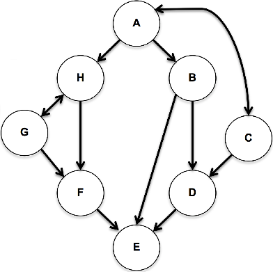
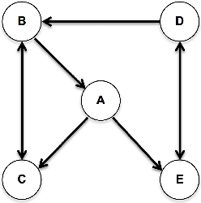
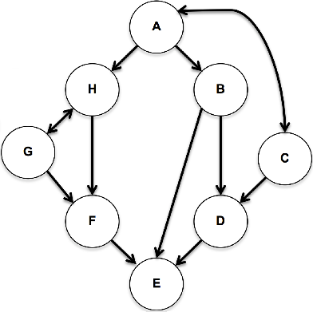

Graph A
Graph A
Graph B

Graph C
Our first data structure, Edge List, has a basic approach. Like other representations, it has a vertex list. Mirroring that, it has a simple list of all graph edges, represented by IDs for source and destination nodes, plus optional weight. For now, omit weight from list entries. An edge list representing the following graph would be: [[A,C],[A,E],[B,A],[B,C],[C,B],[D,B],[D,E],[E,D]]. With only edge lists, can we know whether a given vertex exists?

Edge List Exercise 1
Create edge lists for the following graphs A, B and C.
Graph A
Graph B

Graph C
Edge List Exercise 2
Draw graphs for the following edge lists:
[[A,C],[B,D],[C,E],[D,A],[E,B]]
[[A,C],[A,D],[B,C],[B,D],[C,B],[D,A],[D,C]]
[[A,A],[A,B],[B,C],[C,B],[C,D],[D,E],[D,A]]
Now, onward to the next graph representation!
Chapter 17 – Graphs